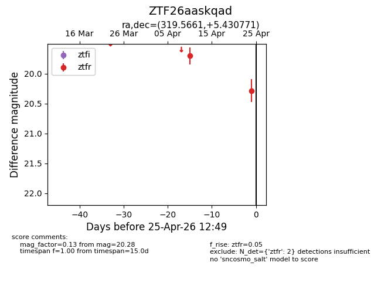
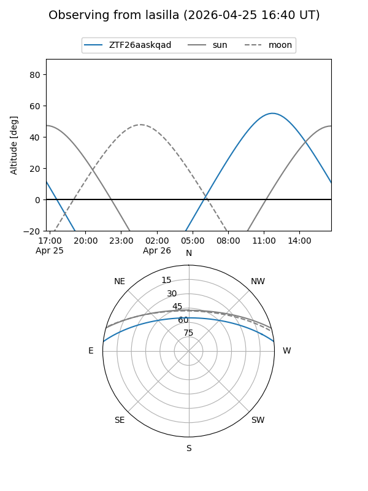
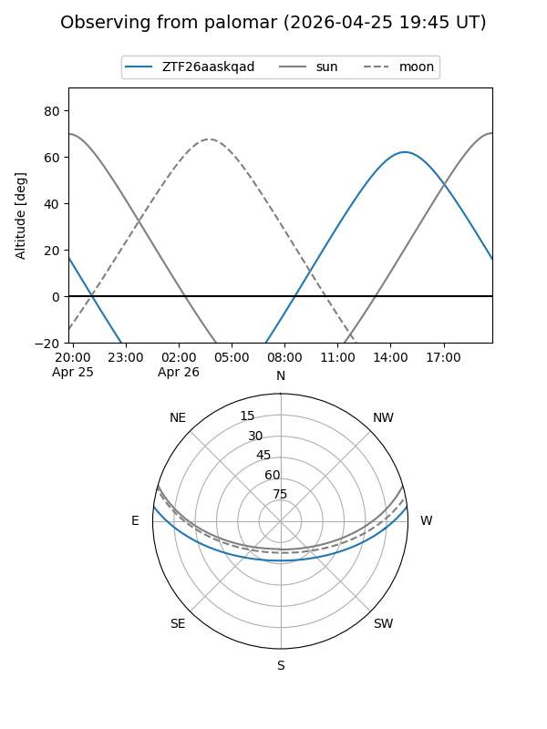

ZTF26aaskqad
Target ZTF26aaskqad at 2026-04-25 12:51
Aliases and brokers:
FINK: link
Lasair: link
ALeRCE: link
alt names
ZTF26aaskqad (ztf,fink_ztf)
Coordinates:
equatorial (ra, dec) = 319.5661,+5.43077
equatorial (HMS+DMS) = 21:18:15.86,+05:25:50.78
galactic (l, b) = (56.9449,-29.10542)
Flags:
Photometry:
last ztfr=20.28
2 ztfr detections
Lightcurve

Visibility


Additional plots